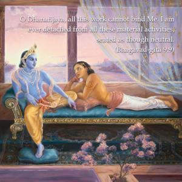
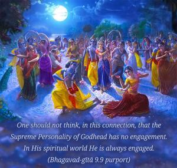
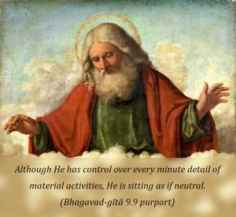

O Dhanañjaya, all this work cannot bind Me. I am ever detached from all these material activities, seated as though neutral.



One should not think, in this connection, that the Supreme Personality of Godhead has no engagement. In His spiritual world He is always engaged. In the Brahma-saṁhitā (5.6) it is stated, ātmārāmasya tasyāsti prakṛtyā na samāgamaḥ: “He is always involved in His eternal, blissful, spiritual activities, but He has nothing to do with these material activities.” Material activities are being carried on by His different potencies. The Lord is always neutral in the material activities of the created world. This neutrality is mentioned here with the word udāsīna-vat. Although He has control over every minute detail of material activities, He is sitting as if neutral. The example can be given of a high-court judge sitting on his bench. By his order so many things are happening – someone is being hanged, someone is being put into jail, someone is awarded a huge amount of wealth – but still he is neutral. He has nothing to do with all that gain and loss. Similarly, the Lord is always neutral, although He has His hand in every sphere of activity. In the Vedānta-sūtra (2.1.34) it is stated, vaiṣamya-nairghṛṇye na: He is not situated in the dualities of this material world. He is transcendental to these dualities. Nor is He attached to the creation and annihilation of this material world. The living entities take their different forms in the various species of life according to their past deeds, and the Lord doesn’t interfere with them.